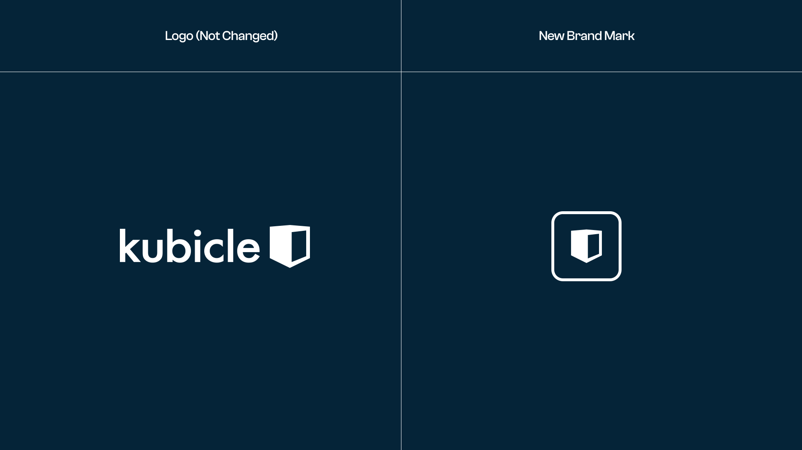
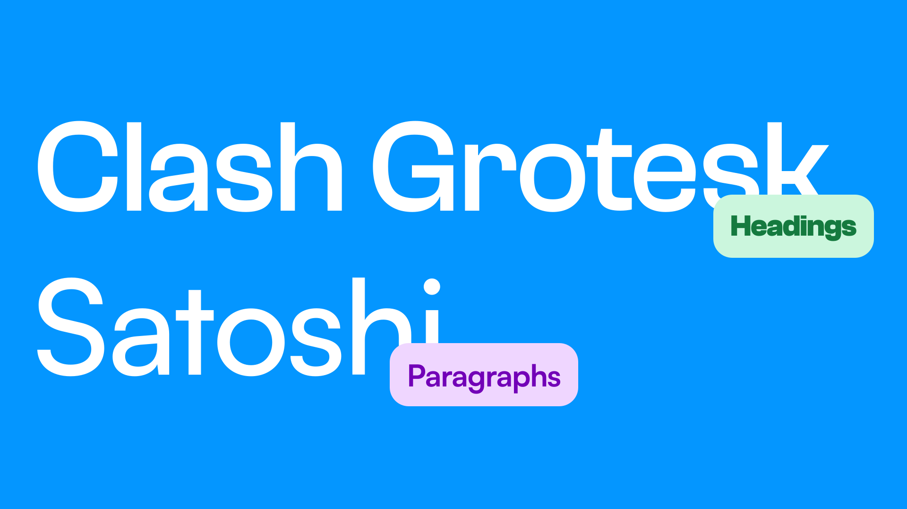
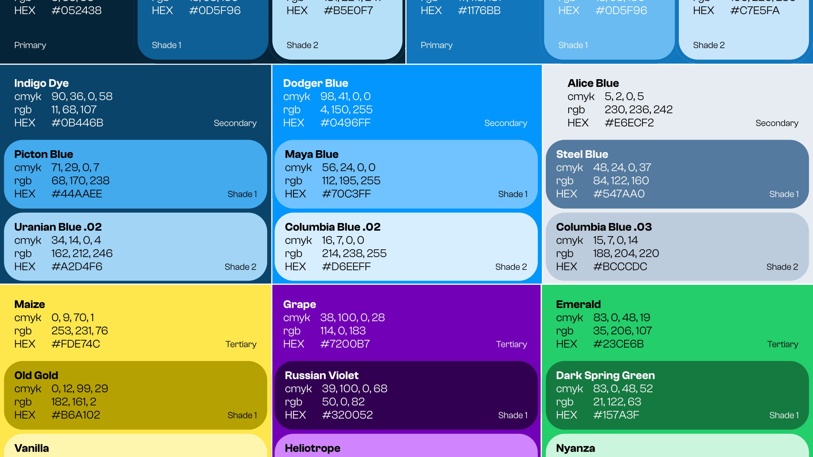
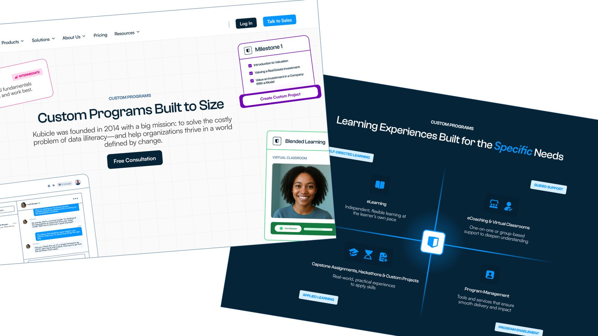

We’re excited to unveil the new Kubicle. An updated brand and a completely redesigned website.
We’re excited to share the new Kubicle. That includes both a refreshed brand and a completely redesigned website.
This project started with a simple goal: to modernise and humanise our brand while making everything we create more consistent and easier to scale. From marketing to product design, we wanted everything to feel aligned and purposeful.
Building a Brand That Works Harder
We didn’t just update the visuals. We created an entire brand system that helps us move faster, look sharper, and connect more clearly with our audience.
Here’s what the process involved:
- Research into our industry and audience needs
- Interviews and audits to understand how Kubicle is seen
- Visual exploration to find a style that truly fits
- Careful design work to build a flexible and future-ready system
A New Visual Identity That Reflects Who We Are
We kept the core Kubicle logo you’re familiar with, and added a new brand symbol. This gives us a flexible visual mark we can use across different platforms and channels.

Typography
We introduced a new type system designed for clarity and flexibility. Headings use a bold, modern font, and body text is clean and easy to read.

Colour
Blue is still central to our identity, but the full palette has been reimagined to feel more dynamic and professional. It now includes:
- A refined set of blues and greys
- A vibrant group of accent colours
- A mix of tones for better contrast and usability

Imagery
Our photography now focuses on real-world applications of Kubicle and the results we help deliver. The goal is to keep visuals authentic, engaging, and aligned with our values.
A Smarter, More Human Website
The new website brings our updated brand to life and makes it easier for people to explore what we do.
We restructured the site to improve navigation and clarity. Whether you're a business leader, a team manager, or an individual learner, it's easier than ever to find what you need.
What’s new:
- A clean, intuitive layout
- Pages for key industries like Banking, Consulting, and Finance
- Deep dives into topics like Data Literacy and AI Upskilling
- A flexible design system that helps us launch updates quickly without losing consistency

Looking Ahead
This is just the beginning. We’re already working on new resources, customer stories, and more ways to support our community.
Thanks for exploring the new Kubicle. There’s a lot more to come.